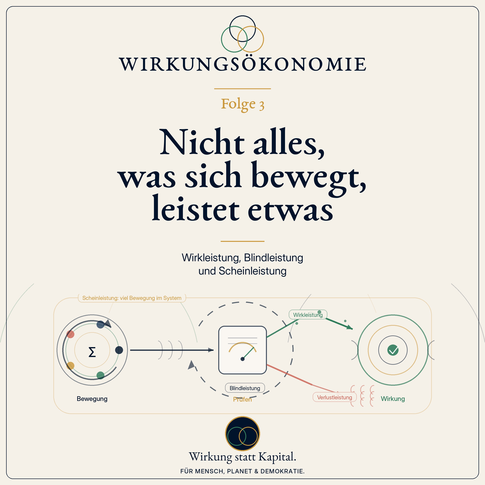

Podcast · Folge 3 · 18. Juni 2026 · 26:49
Nicht alles, was sich bewegt, leistet etwas
Wirkleistung, Blindleistung und Scheinleistung

 Wirkungsökonomie
Wirkungsökonomie
Podcast · Folge 3 · 18. Juni 2026 · 26:49
Wirkleistung, Blindleistung und Scheinleistung

Anhören
Wir arbeiten. Wir produzieren. Wir berichten. Wir kaufen. Wir klicken. Wir wachsen. Überall ist Bewegung. Aber ist Bewegung schon Leistung?
In Folge 3 der Podcast-Reihe zur Wirkungsökonomie geht es um eine einfache, aber entscheidende Unterscheidung: Nicht alles, was nach Leistung aussieht, erzeugt auch echte Wirkung.
Das Bild dieser Folge kommt aus der Physik. Dort gibt es Begriffe wie Scheinleistung, Blindleistung, Verlustleistung und Wirkleistung. Manche Energie ist sichtbar im System unterwegs, treibt aber am Ende keinen Motor an. Manche Energie geht als Wärme verloren. Und nur ein Teil wird tatsächlich in nutzbare Arbeit verwandelt.
Genau dieses Bild hilft, unsere Wirtschaft besser zu verstehen: Ein Unternehmen kann viel Umsatz machen und trotzdem Schäden verursachen. Ein Staat kann viel Geld ausgeben und trotzdem wenig verbessern. Eine Volkswirtschaft kann wachsen, obwohl sie Klima, Gesundheit, Vertrauen oder Lebensqualität verbraucht.
Die Wirkungsökonomie fragt deshalb nicht zuerst: Wie viel Aufwand steckt darin? Sie fragt: Was verändert sich wirklich?
Diese Folge erklärt, warum wir Leistung neu verstehen müssen: nicht als bloße Aktivität, Beschäftigung, Umsatz oder Wachstum, sondern als tatsächliche positive Zustandsveränderung für Mensch, Planet und Demokratie.
Es geht nicht darum, Arbeit abzuwerten. Im Gegenteil. Es geht darum, sichtbar zu machen, welche Arbeit wirklich trägt: Pflege, Bildung, Prävention, gute Produkte, faire Lieferketten, saubere Energie, demokratische Stabilität und alles, was Zukunft möglich macht.
Merksatz der Folge: Leistung ist nicht, was Aufwand erzeugt. Leistung ist, was Wirkung erzeugt.
Verknüpfungen
Transkript
Das Transkript macht die Folge auch als Text zugänglich und verknüpft zentrale Begriffe mit dem Glossar.
Stell dir vor, ein Auto steckt im Schlamm fest.
Der Motor läuft. Nicht ein bisschen. Richtig. Er heult. Die Räder drehen sich. Schlamm spritzt. Vielleicht riecht es sogar schon ein wenig nach heißem Gummi. Im Auto sitzt jemand, der sich Mühe gibt. Kupplung, Gas, Lenkrad, noch einmal Gas.
Von außen sieht das nach sehr viel Bewegung aus.
Der Motor arbeitet. Die Reifen arbeiten. Der Mensch arbeitet. Energie wird verbraucht. Geräusche entstehen. Spuren entstehen. Alle Anzeigen sagen: Hier passiert etwas.
Und trotzdem bleibt das Auto an derselben Stelle.
Jetzt kommt die einfache Frage dieser Folge:
Ist das schon Leistung?
Man kann sagen: Ja, natürlich, der Motor leistet etwas. Da fließt Energie. Da wird Kraft übertragen. Da bewegt sich etwas.
Aber man kann auch sagen: Nein, jedenfalls nicht in dem Sinn, den wir eigentlich meinen. Denn die Leistung kommt nicht dort an, wo sie ankommen soll. Das Auto soll sich nicht nur anstrengen. Es soll vorankommen.
Und genau an diesem kleinen Bild hängt eine große Frage unserer Zeit.
Was ist eigentlich Leistung?
Ist Leistung, wenn viel gearbeitet wird? Wenn viel produziert wird? Wenn viel verkauft wird? Wenn viel berichtet wird? Wenn viele Menschen in Meetings sitzen? Wenn eine Zahl wächst? Wenn die Reichweite steigt?
Oder ist Leistung erst dann Leistung, wenn sich wirklich etwas verbessert?
In der heutigen Folge geht es um einen Gedanken aus der Physik, der erstaunlich gut hilft, unsere Wirtschaft zu verstehen: Nicht alles, was sich bewegt, leistet etwas. Und nicht alles, was Leistung heißt, wirkt auch wirklich.
Willkommen zu Folge 3 von "Der neue Kompass - Wirkungsökonomie einfach erklärt".
Hallo und herzlich willkommen. Mein Name ist Natalie Weber, und heute sprechen wir über einen Begriff, der in unserer Gesellschaft fast heilig ist: Leistung.
Wir benutzen ihn ständig. Leistungsträger. Leistungsgesellschaft. Leistungsbereitschaft. Leistungslohn. Leistungsprinzip. Wer viel leistet, soll auch viel bekommen. Das klingt erst einmal fair.
Aber bevor wir über Fairness sprechen, müssen wir klären, was wir eigentlich meinen, wenn wir Leistung sagen.
In Folge 1 haben wir mit zwei Äpfeln begonnen. Zwei Äpfel im Supermarkt, vielleicht fast derselbe Preis, aber nicht dieselbe Geschichte. Wir haben gesehen: Das Preisschild sagt uns, was wir bezahlen. Aber nicht, wer sonst noch bezahlt.
In Folge 2 ging es um den falschen Kompass. Wir haben gefragt: Warum steuern wir Wirtschaft, Politik und Wohlstand so oft nach Kapital, Gewinn, Wachstum oder Umsatz - obwohl diese Größen uns nicht sagen, ob wir in die richtige Richtung gehen?
Heute gehen wir einen Schritt weiter. Denn wenn der alte Kompass falsch zeigt, dann sind auch viele unserer alten Leistungsbilder schief.
Wir glauben oft: Je mehr Aufwand, desto mehr Leistung. Je mehr Arbeit, desto mehr Wert. Je mehr Geld, desto mehr Beitrag. Je mehr Umsatz, desto mehr Erfolg.
Aber das stimmt nicht automatisch.
Ein Auto im Schlamm kann sehr viel Kraft verbrauchen und trotzdem nicht vorankommen. Eine Verwaltung kann tausende Seiten Formulare erzeugen und trotzdem ein Problem nicht lösen. Ein Unternehmen kann Millionen Produkte verkaufen und trotzdem die Lebensgrundlagen beschädigen. Ein Social-Media-Beitrag kann zehn Millionen Menschen erreichen und trotzdem Vertrauen zerstören.
Bewegung ist noch keine Richtung. Aufwand ist noch keine Wirkung. Und Einkommen ist noch kein Beweis für gesellschaftliche Leistung.
Jetzt kommt ein Stück Physik. Aber keine Sorge: Wir bleiben nicht lange im Schaltschrank. Wir nehmen nur eine Brille mit.
In der Elektrotechnik gibt es Begriffe, die auf den ersten Blick trocken klingen: Scheinleistung, Blindleistung, Wirkleistung und Verlustleistung.
Man muss dafür keine Formel kennen. Das Bild reicht.
Stell dir ein elektrisches System vor. Strom fließt. Spannung liegt an. Von außen sieht man: Da ist Leistung im System. Das ist grob gesagt die Scheinleistung: das, was insgesamt sichtbar oder rechnerisch im System unterwegs ist.
Aber nicht alles davon wird am Ende als nützliche Arbeit wirksam. Ein Teil wird wirklich genutzt: Ein Motor dreht sich. Eine Pumpe fördert Wasser. Eine Lampe leuchtet. Das ist die Wirkleistung.
Ein anderer Teil pendelt im System hin und her. Er belastet Leitungen und Bauteile, ohne dauerhaft nutzbare Arbeit zu verrichten. Das nennt man Blindleistung.
Und dann gibt es noch Verluste. Wärme, Reibung, Widerstand. Energie, die nicht da ankommt, wo sie gebraucht wird. Das ist Verlustleistung.
Für die Wirkungsökonomie ist das keine technische Gleichsetzung. Wir sagen nicht: Eine Gesellschaft ist ein Stromkreis. Das wäre zu einfach.
Aber diese Begriffe helfen uns, eine wichtige Unterscheidung zu sehen.
Nicht alles, was im System bewegt wird, ist nützlich. Nicht alles, was laut ist, wirkt. Nicht alles, was Aufwand erzeugt, bringt uns voran. Und nicht jede Zahl, die wächst, bedeutet Fortschritt.
Die entscheidende Frage lautet nicht: Wie viel Leistung scheint im System zu sein? Sondern: Wie viel davon kommt als positive Wirkung an?
Beginnen wir mit der Scheinleistung.
Im Alltag kennen wir Scheinleistung gut. Sie ist das, was beeindruckend aussieht. Ein voller Kalender. Ein großes Büro. Viele E-Mails. Viele Kennzahlen. Viel Umsatz. Hohe Reichweite. Ein dicker Bericht. Ein starkes Wachstum.
All das kann wichtig sein. Es kann ein Hinweis darauf sein, dass etwas passiert. Aber es beweist noch nicht, dass etwas Gutes passiert.
Ein Unternehmen kann seinen Umsatz steigern, indem es Produkte verkauft, die nach kurzer Zeit kaputtgehen. Dann steigt die Zahl. Aber steigt auch die positive Wirkung? Oder steigt nur die Menge an Material, Transport, Abfall und Frust?
Ein Land kann ein höheres Bruttoinlandsprodukt haben, weil nach einer Überschwemmung Häuser, Straßen und Brücken wieder aufgebaut werden müssen. Dann wächst die Wirtschaftsleistung. Aber niemand würde ernsthaft sagen: Die Flut war Wohlstand.
Eine Plattform kann Millionen Klicks erzeugen, indem sie Empörung, Angst und Feindbilder verstärkt. Die Reichweite ist hoch. Die Werbeeinnahmen vielleicht auch. Aber wenn Vertrauen, Wahrheit und demokratischer Zusammenhalt beschädigt werden, ist diese Bewegung keine positive Leistung.
Scheinleistung heißt deshalb nicht: Alles ist falsch. Scheinleistung heißt: Wir sehen Bewegung, aber wir wissen noch nicht, ob diese Bewegung wirklich nützt.
Das ist der erste wichtige Schritt. Wir müssen aufhören, jede große Zahl automatisch mit guter Leistung zu verwechseln.
Eine große Zahl ist noch kein guter Zustand.
Jetzt zur Blindleistung.
Blindleistung ist ein besonders gutes Bild für viele Erfahrungen, die Menschen in Organisationen, Unternehmen und Verwaltungen kennen.
Man arbeitet den ganzen Tag. Man beantwortet E-Mails. Man füllt Tabellen aus. Man nimmt an Besprechungen teil. Man prüft, ob jemand anderes geprüft hat, was vorher schon einmal geprüft wurde. Man erstellt einen Bericht über einen Bericht. Man wartet auf Freigaben. Man überträgt Daten aus System A in System B und später wieder zurück.
Am Abend ist man müde. Sehr müde. Und trotzdem ist die eigentliche Frage noch offen: Ist das Problem kleiner geworden?
Das ist wichtig: Blindleistung ist kein Vorwurf an die Menschen, die darin arbeiten.
Ein Mensch, der Formulare ausfüllt, leistet oft sehr viel. Er bemüht sich, er hält Regeln ein, er schützt sich und andere vor Fehlern. Viele Verwaltungsprozesse haben einen guten Grund: Sie sollen Fairness sichern, Missbrauch verhindern, Sicherheit schaffen, Rechtsstaatlichkeit gewährleisten.
Aber wenn ein System immer mehr Energie braucht, nur um sich selbst zu verwalten, dann müssen wir fragen: Warum entsteht diese Blindleistung?
Oft entsteht sie, weil der eigentliche Steuerungsmechanismus falsch ist.
Wenn Preise nicht zeigen, ob ein Produkt schädlich oder hilfreich wirkt, braucht der Staat zusätzliche Regeln. Dann kommen Ausnahmen, Förderprogramme, Nachweise, Sonderprüfungen, Labels, Berichtspflichten, Kontrollmechanismen. Jedes einzelne Instrument kann sinnvoll sein. Aber zusammen entsteht ein Flickenteppich.
Das ist wie bei einem Haus, in dem die Heizung falsch eingestellt ist. Statt den Thermostat zu reparieren, stellt man in jedem Zimmer einen Ventilator, eine Decke, einen Heizlüfter und ein Warnschild auf. Alles ist beschäftigt. Aber der Grundfehler bleibt.
Blindleistung ist oft Reparaturarbeit für einen falschen Kompass.
Dann gibt es noch Verlustleistung.
Verlustleistung ist das, was im System verloren geht. In Maschinen ist es Wärme, Reibung, Widerstand. In Gesellschaften sieht es anders aus. Dort verlieren wir Zeit, Vertrauen, Gesundheit, Ressourcen, Motivation, Natur und manchmal auch demokratische Stabilität.
Ein Beispiel: Wenn Menschen in einem Unternehmen so viele sinnlose Prozesse durchlaufen müssen, dass sie innerlich kündigen oder krank werden, dann ist das nicht nur Blindleistung. Dann entsteht Verlustleistung. Das System verbrennt menschliche Energie.
Ein anderes Beispiel: Wenn ein Produkt billig ist, weil es am Anfang Wasser verschmutzt, am Ende Abfall erzeugt und zwischendurch Menschen schlecht bezahlt, dann sieht der Preis an der Kasse vielleicht effizient aus. Aber in Wahrheit entstehen Verluste an anderer Stelle.
Diese Verluste verschwinden nicht. Sie tauchen nur woanders auf.
Als Gesundheitskosten. Als Klimafolgekosten. Als Vertrauensverlust. Als Artensterben. Als Mietenstress. Als Pflegekrise. Als politische Wut. Als Zukunftsangst.
Die Wirkungsökonomie sagt: Wir dürfen diese Verluste nicht länger behandeln, als wären sie außerhalb der Rechnung. Sie sind Teil der Rechnung. Nur eben bisher nicht im Preis, nicht in der Steuer, nicht in der Bilanz und nicht im Leistungsbegriff.
Was im Preis verschwindet, verschwindet nicht aus der Welt.
Und jetzt kommen wir zur Wirkleistung.
Wirkleistung ist der Teil der Bewegung, der tatsächlich ankommt. Der Motor dreht nicht nur. Das Auto kommt aus dem Schlamm. Die Pumpe brummt nicht nur. Wasser fließt. Die Lampe verbraucht nicht nur Strom. Der Raum wird hell.
Übertragen auf Wirtschaft und Gesellschaft heißt das: Wirkleistung ist nicht bloß Aufwand. Sie ist tatsächliche Zustandsveränderung.
Eine Pflegekraft erzeugt Wirkleistung, wenn ein Mensch versorgt, beruhigt, gewaschen, geschützt, gewürdigt und stabilisiert wird.
Eine Lehrerin erzeugt Wirkleistung, wenn ein Kind nicht nur Stoff auswendig lernt, sondern die Welt besser versteht und sich selbst etwas zutraut.
Ein Unternehmen erzeugt Wirkleistung, wenn ein Produkt ein echtes Problem löst, ohne dabei an anderer Stelle schwere Schäden zu verursachen.
Eine Verwaltung erzeugt Wirkleistung, wenn sie Rechte schützt, Sicherheit schafft, Verfahren vereinfacht und Menschen ermöglicht, ihr Leben zu gestalten.
Ein Medium erzeugt Wirkleistung, wenn es Orientierung schafft, Fakten prüft, Perspektiven ordnet und demokratischen Streit möglich macht, ohne Menschen gegeneinander aufzuhetzen.
Wirkleistung ist also nicht romantisch. Sie ist sehr konkret.
Sie fragt: Was verändert sich wirklich? Wird ein Mensch gesünder? Wird Arbeit fairer? Wird Wasser sauberer? Wird Boden fruchtbarer? Wird Vertrauen gestärkt? Wird Demokratie stabiler? Wird ein Risiko kleiner? Wird ein System lernfähiger?
Leistung ist nicht Bewegung. Leistung ist positive Zustandsveränderung.
Nehmen wir ein Beispiel, das schnell emotional wird. Eine Pflegekraft und ein Hochfrequenzhändler.
Die Pflegekraft beginnt früh am Morgen. Sie hilft Menschen aus dem Bett. Sie misst Werte. Sie hört zu. Sie bemerkt, wenn jemand Angst hat, obwohl er es nicht sagt. Sie verhindert Stürze. Sie beruhigt Angehörige. Sie hält Würde fest, oft unter Bedingungen, die selbst nicht würdig genug sind.
Der Hochfrequenzhändler arbeitet mit Algorithmen, Märkten, Datenströmen und Millisekunden. Er kauft und verkauft in unfassbarer Geschwindigkeit. Vielleicht verdient er sehr viel Geld. Vielleicht trägt er in bestimmten Situationen auch zu Liquidität und Preisfindung bei. Das soll man nicht pauschal abwerten.
Aber die Frage der Wirkungsökonomie lautet nicht: Wer wirkt sympathischer?
Sie lautet auch nicht: Wer ist moralisch besser?
Sie lautet: Welche tatsächliche Wirkung entsteht? Für wen? In welchem Zeitraum? Mit welchen Nebenwirkungen?
Unser heutiges System beantwortet diese Frage oft gar nicht. Es schaut auf Einkommen, Marktwert und Kapitalfluss. Wenn der Händler zehnmal so viel verdient wie die Pflegekraft, dann erscheint seine Tätigkeit im alten System automatisch als höher bewertet.
Aber höheres Einkommen ist kein Beweis für höhere gesellschaftliche Wirkung.
Das ist der Kern. Nicht als Neiddebatte. Nicht als Angriff auf Berufe. Sondern als Messproblem.
Wenn wir eine Gesellschaft wirklich nach Leistung ordnen wollen, dann müssen wir Leistung an Wirkung koppeln. Nicht an Status. Nicht an Lautstärke. Nicht an Marktposition. Nicht allein an Einkommen.
Eine Gesellschaft, die Heilen schlechter zählt als Spekulieren, rechnet mindestens unvollständig.
An dieser Stelle ist ein Missverständnis wichtig.
Wenn ich sage: Arbeit ist nicht automatisch Wirkung, dann heißt das nicht: Arbeit ist unwichtig.
Arbeit ist wichtig. Für Einkommen. Für Würde. Für Selbstwirksamkeit. Für Gemeinschaft. Für Können. Für Sinn. Für das Gefühl, gebraucht zu werden.
Aber nicht jede Arbeit ist automatisch positive Wirkung. Und nicht jede positive Wirkung wird heute als Arbeit anerkannt.
Ein Mensch, der Angehörige pflegt, verhindert vielleicht einen Krankenhausaufenthalt. Ein Mensch, der Nachbarschaft organisiert, verhindert Einsamkeit. Ein Mensch, der ehrenamtlich Kinder trainiert, schafft Zugehörigkeit. Ein Mensch, der in einer Kommune Hitzevorsorge plant, verhindert spätere Schäden. Vieles davon erscheint im alten System als Kosten, Freizeit oder Nebensache.
In Wahrheit ist es oft Wirkleistung.
Umgekehrt kann eine Tätigkeit formal sehr gut bezahlt und sehr professionell organisiert sein und trotzdem negative Wirkung erzeugen. Ein Geschäftsmodell kann Ressourcen übernutzen, Desinformation verstärken, Suchtverhalten ausnutzen oder Produkte absichtlich so bauen, dass sie schnell kaputtgehen.
Dann ist Arbeit da. Kapital ist da. Organisation ist da. Vielleicht sogar Innovation. Aber die Richtung stimmt nicht.
Die Wirkungsökonomie wertet Menschen nicht ab. Sie prüft die Wirkung von Tätigkeiten, Strukturen und Anreizen.
Jetzt können wir den neuen Leistungsbegriff sauberer fassen.
Wirkung ist in der Wirkungsökonomie zunächst neutral. Wirkung heißt: Ein Zustand verändert sich tatsächlich. Diese Veränderung kann positiv, negativ oder neutral sein.
Ob eine Wirkung positiv ist, entscheidet nicht mein persönliches Bauchgefühl. Die Wirkungsökonomie braucht dafür einen nachvollziehbaren Referenzrahmen: Mensch, Planet und Demokratie. In der Praxis heißt das: die SDGs, die Agenda 2030 und die ergänzenden SDG+-Felder wie Demokratie, Medienqualität, Rechtsstaatlichkeit, institutionelles Vertrauen und digitaler Selbstschutz.
Leistung im Sinne der Wirkungsökonomie ist also nicht einfach jede Zustandsveränderung. Sonst wäre auch Zerstörung Leistung.
Leistung ist positive Wirkleistung: eine tatsächliche Veränderung, die Mensch, Planet und Demokratie stärkt, ohne schwere Schäden in einem anderen Feld zu verstecken.
Darum reicht Durchschnittsdenken nicht. Wenn ein Produkt beim Klima gut ist, aber in der Lieferkette Kinderarbeit enthält, dann kann man nicht sagen: Im Durchschnitt passt es schon. Das schwächste Feld entscheidet. In der Wirkungsökonomie heißt dieses Prinzip Reverse Merit Order oder Nichtkompensation.
Das klingt technisch, ist aber sehr einfach.
Ein Loch im Boot bleibt ein Loch im Boot, auch wenn die Segel schön sind.
Positive Leistung darf schwere negative Wirkung nicht übermalen.
Schauen wir auf eine der mächtigsten Zahlen der Welt: das Bruttoinlandsprodukt, kurz BIP.
Das BIP misst wirtschaftliche Aktivität. Es misst, wie viel produziert, verkauft und bezahlt wird. Diese Zahl ist nicht nutzlos. Sie zeigt Bewegung im Wirtschaftssystem.
Aber sie sagt nicht zuverlässig, ob diese Bewegung Wohlstand schafft oder Wohlstand verbraucht.
Wenn nach einer Flut Häuser repariert werden, steigt das BIP. Wenn Menschen krank werden und teure Behandlungen brauchen, steigt das BIP. Wenn Ressourcen verschwendet und später aufwendig gereinigt werden, kann das BIP ebenfalls steigen. Reparatur erzeugt Aktivität. Aber nicht jede Reparatur ist Wohlstand.
Manchmal ist sie nur die teure Folge eines früheren Schadens.
In der Sprache dieser Folge könnte man sagen: Das BIP zählt viel Scheinleistung. Manchmal auch Blindleistung. Manchmal sogar Verlustleistung, wenn Schäden erst verursacht und dann als wirtschaftliche Aktivität repariert werden.
Eine Wirkungsökonomie würde anders fragen.
Sie würde nicht nur zählen: Wie viel wurde bewegt? Sondern: Was davon war Wirkleistung? Was hat Gesundheit gestärkt, Bildung verbessert, Emissionen gesenkt, Ressourcen regeneriert, Vertrauen aufgebaut, Risiken reduziert? Und was war Reparatur für Schäden, die wir bei besserer Steuerung hätten vermeiden können?
Ein Land ist nicht reicher, nur weil es teurer reparieren muss, was vorher zerstört wurde.
Ein weiteres Beispiel ist der Nachhaltigkeitsbericht.
Ich sage das bewusst vorsichtig, weil Nachhaltigkeitsberichte wichtig sind. Sie machen Daten sichtbar. Sie schaffen Vergleichbarkeit. Sie zwingen Unternehmen, über Emissionen, Wasser, Arbeit, Lieferketten, Risiken und Governance nachzudenken.
Aber ein Bericht ist noch keine Wirkung.
Ein Bericht ist wie ein Thermometer. Er zeigt eine Temperatur an. Das ist nützlich. Aber das Thermometer heizt den Raum nicht. Und es kühlt ihn auch nicht.
Ein Nachhaltigkeitsbericht wird erst dann zur Wirkleistung, wenn seine Daten Entscheidungen verändern. Wenn der Einkauf andere Lieferanten wählt. Wenn ein Produkt anders entwickelt wird. Wenn Kapital günstiger wird für positive Wirkung und teurer für negative. Wenn Steuern, Preise, Beschaffung und Management wirklich rückgekoppelt werden.
Sonst bleibt Reporting Scheinleistung oder Blindleistung: sehr viel Arbeit, sehr viele Tabellen, vielleicht sogar gute Absicht - aber zu wenig Veränderung im Kernsystem.
Das ist einer der Gründe, warum die Wirkungsökonomie nicht bei Berichten stehen bleibt. Sie will aus Berichtsdaten Steuerungsdaten machen.
Ein Bericht beschreibt. Rückkopplung verändert.
Jetzt wird es politisch. Denn ein neuer Leistungsbegriff darf nicht nur ein schöner Gedanke bleiben.
Wenn wir sagen: Leistung ist positive Wirkung, dann muss sich das in den großen Steuerungsinstrumenten zeigen.
Erstens in der Wohlstandsmessung. Wir brauchen neben dem BIP eine Wirkungsbilanz. Ein Wirkungs-BIP müsste unterscheiden: Welche Aktivität ist echte Wirkleistung? Welche ist Reparatur? Welche ist Scheinleistung? Welche ist Verlustleistung?
Zweitens in der Steuerpolitik. Heute werden Tätigkeiten oft nach Einkommen oder Umsatz behandelt, nicht nach Wirkung. Eine Führungskraft in einem klimaschädlichen Geschäftsmodell und eine Führungskraft in einem zukunftsfähigen Geschäftsmodell können steuerlich gleich behandelt werden, obwohl ihre Systemwirkung sehr unterschiedlich ist. Eine Wirkungseinkommensteuer würde diese Unterschiede sichtbar machen.
Drittens in der Rente und im Einkommen. Wenn Pflege, Bildung, Prävention, Demokratiearbeit und ökologische Regeneration hohe Wirkleistung erzeugen, dann darf ein System diese Bereiche nicht dauerhaft schlechter absichern als Tätigkeiten mit hoher Kapitalrendite, aber fraglicher Systemwirkung. Darum gehören Wirkungseinkommen und Wirkungsrente in diese Debatte.
Viertens in der öffentlichen Beschaffung. Der Staat kauft jedes Jahr für enorme Summen ein: Essen, Strom, Gebäude, Fahrzeuge, IT, Kleidung, Dienstleistungen. Wenn dort nicht nur der niedrigste Preis zählt, sondern die beste Wirkung, entsteht sofort ein Markt für Wirkleistung.
Fünftens in der Verwaltung selbst. Prozesse sollten nicht nur danach bewertet werden, ob sie formal korrekt sind, sondern ob sie tatsächlich Schutz, Fairness, Geschwindigkeit, Verständlichkeit und Vertrauen erzeugen. Dann kann man Bürokratie abbauen, ohne Rechtsstaatlichkeit abzubauen.
Politik mit Wirkung fragt nicht: Wie viel wurde getan? Sie fragt: Was hat sich verbessert?
An dieser Stelle kommt häufig ein Einwand: Ist das nicht Planwirtschaft? Wenn der Staat anfängt zu sagen, was gute Wirkung ist?
Die Sorge ist verständlich. Und sie muss ernst genommen werden.
Aber die Wirkungsökonomie ist gerade keine Planwirtschaft. Sie sagt nicht: Der Staat plant jedes Produkt, jede Tätigkeit, jeden Preis und jede Lebensentscheidung.
Sie sagt: Märkte bleiben Suchprozesse. Unternehmen bleiben innovativ. Menschen bleiben frei. Kapital bleibt wichtig. Gewinn bleibt möglich.
Aber der Markt braucht bessere Informationen und bessere Rückkopplung.
Heute entscheidet der Markt oft mit falschen Preisen. Schädliches ist billig, weil Schäden ausgelagert werden. Verantwortliches ist teuer, weil positive Wirkung nicht belohnt wird. Das ist keine reine Freiheit. Das ist ein verzerrtes Spielfeld.
Die Wirkungsökonomie repariert nicht jede Entscheidung von außen. Sie verändert die Signale im System. Ein Produkt mit schädlicher Wirkung wird teurer. Ein Produkt mit positiver Wirkung wird günstiger. Kapital fließt eher in Geschäftsmodelle, die Zukunft sichern. Öffentliche Mittel gehen dorthin, wo sie echte Wirkung erzeugen.
Das ist eher wie ein besserer Kompass, nicht wie eine Fernsteuerung.
Der Staat wird nicht zum Spieler, der alle Züge vorgibt. Er wird zum Rückkopplungsarchitekten: Er sorgt dafür, dass Folgen sichtbar werden und das System daraus lernen kann.
Die Wirkungsökonomie ersetzt Freiheit nicht. Sie macht Freiheit wirklichkeitsfähiger.
Zum Schluss dieser Folge möchte ich noch einmal zum Menschen zurück.
Warum ist dieser Leistungsbegriff so wichtig? Nicht nur für Steuern, BIP und Politik. Sondern für uns selbst?
Weil Menschen nicht nur beschäftigt sein wollen. Menschen wollen wirksam sein.
Das spürt man sehr deutlich, wenn man in einer sinnlosen Aufgabe festhängt. Man kann den ganzen Tag gearbeitet haben und trotzdem leer nach Hause gehen, wenn man das Gefühl hat: Es hat nichts verändert.
Und man kann nach einer schweren Aufgabe erschöpft sein, aber erfüllt, weil man weiß: Es hat jemandem geholfen. Es hat etwas geschützt. Es hat etwas geklärt. Es hat etwas besser gemacht.
Das ist der Unterschied zwischen bloßer Beschäftigung und Wirksamkeit.
Eine gute Wirtschaft sollte Menschen nicht in Blindleistung halten. Eine gute Verwaltung sollte Menschen nicht in Formularschleifen verlieren. Eine gute Politik sollte nicht nur Programme ankündigen, sondern Zustände verbessern. Eine gute Demokratie sollte nicht nur Stimmen zählen, sondern Vertrauen, Wahrheit und Teilhabe schützen.
Wirkungsökonomie heißt deshalb auch: Menschen ernst nehmen. Nicht als Kostenfaktor. Nicht als Konsument. Nicht als Zeile in einer Statistik. Sondern als Wesen, die Wirkung brauchen und Wirkung erzeugen können.
Menschen brauchen nicht nur Arbeit. Menschen brauchen das Gefühl, dass ihr Tun wirkt.
Fassen wir zusammen.
Erstens: Nicht alles, was sich bewegt, leistet etwas. Bewegung kann Scheinleistung sein.
Zweitens: Nicht jede Beschäftigung bringt ein System voran. Viel Aufwand kann Blindleistung sein, wenn er nur einen falschen Kompass repariert.
Drittens: Manche Aktivitäten erzeugen sogar Verlustleistung: Sie verbrennen Ressourcen, Vertrauen, Gesundheit oder Zukunft.
Viertens: Wirkleistung entsteht dort, wo sich Zustände wirklich verbessern - für Mensch, Planet und Demokratie.
Fünftens: Ein gerechter Leistungsbegriff muss Wirkung sichtbar machen. Nicht, um Menschen moralisch zu bewerten, sondern um Strukturen, Tätigkeiten und Anreize besser zu steuern.
Der Merksatz dieser Folge lautet:
Leistung ist nicht, was Aufwand erzeugt. Leistung ist, was positive Wirkung erzeugt.
Und jetzt kommt die nächste wichtige Frage.
Was ist, wenn jemand wirklich helfen will - und am Ende trotzdem Schaden entsteht?
Was ist, wenn eine politische Maßnahme gut gemeint ist, aber die falschen Anreize setzt? Was ist, wenn ein Unternehmen ein Nachhaltigkeitsprojekt startet, das schön klingt, aber kaum etwas verändert? Was ist, wenn Absicht und Wirkung auseinanderfallen?
Darum geht es in Folge 4.
Der Titel lautet: "Wirkung ist nicht Absicht".
Denn guter Wille ist wichtig. Aber er ersetzt keine Rückkopplung.
Danke, dass ihr zugehört habt. Wenn euch diese Folge geholfen hat, teilt sie gern mit Menschen, die manchmal das Gefühl haben, sehr viel zu tun - und trotzdem zu wenig zu bewirken.
Bis zur nächsten Folge von "Der neue Kompass - Wirkungsökonomie einfach erklärt".
Optionaler Produktionsanhang
A. Mögliche Kapitelmarken
00:00 - Cold Open - Das Auto im Schlamm
02:10 - Rückblick auf Folge 1 und 2
05:00 - Die Physikbrille: Schein-, Blind-, Verlust- und Wirkleistung
10:30 - Scheinleistung: große Zahlen, unklare Richtung
14:30 - Blindleistung: viel Arbeit, wenig Veränderung
18:30 - Verlustleistung: wenn Aufwand Schäden erzeugt
22:00 - Wirkleistung: tatsächliche positive Zustandsveränderung
26:00 - Pflegekraft und Hochfrequenzhändler
31:00 - BIP, Reporting und politische Konsequenzen
37:00 - Warum das keine Planwirtschaft ist
41:00 - Zusammenfassung und Ausblick auf Folge 4
B. Kurzbeschreibung für Podcast-Plattformen
Was ist eigentlich Leistung?
In Folge 3 geht es um einen Gedanken aus der Physik, der unsere Wirtschaft erstaunlich gut erklärt: Nicht alles, was sich bewegt, leistet etwas. Ein Auto kann im Schlamm feststecken, der Motor kann heulen, die Räder können drehen - und trotzdem kommt es nicht voran.
Genauso kann eine Gesellschaft sehr beschäftigt sein: mit Wachstum, Umsatz, Berichten, Meetings, Formularen und Reichweite. Aber die entscheidende Frage bleibt: Was davon verbessert wirklich das Leben von Menschen, schützt den Planeten und stärkt Demokratie?
Diese Folge erklärt die Begriffe Scheinleistung, Blindleistung, Verlustleistung und Wirkleistung in einfacher Sprache - und überträgt sie auf Pflege, Finanzmärkte, Bürokratie, Nachhaltigkeitsberichte, BIP und politische Steuerung.
Der zentrale Gedanke: Leistung ist nicht Aufwand. Leistung ist positive Wirkung.
C. LinkedIn-Teaser
Nicht alles, was sich bewegt, leistet etwas.
Ein Auto kann im Schlamm feststecken. Der Motor heult, die Räder drehen, Energie wird verbraucht - und trotzdem bewegt sich das Auto keinen Meter.
Genau so funktionieren viele unserer Systeme: viel Aktivität, viele Kennzahlen, viele Berichte, viel Umsatz, viel Reichweite. Aber die entscheidende Frage lautet: Was davon bewirkt wirklich etwas Gutes?
In Folge 3 meiner Podcast-Reihe zur Wirkungsökonomie geht es um Scheinleistung, Blindleistung, Verlustleistung und Wirkleistung - und um die Frage, warum wir Leistung neu denken müssen.
Leistung ist nicht, was Aufwand erzeugt. Leistung ist, was positive Wirkung erzeugt.
Wirkung statt Kapital. Für Mensch, Planet und Demokratie.
D. Kühlschrank-Sätze
Bewegung ist noch keine Richtung.
Eine große Zahl ist noch kein guter Zustand.
Blindleistung ist oft Reparaturarbeit für einen falschen Kompass.
Ein Bericht beschreibt. Rückkopplung verändert.
Leistung ist nicht, was Aufwand erzeugt. Leistung ist, was positive Wirkung erzeugt.
Menschen brauchen nicht nur Arbeit. Menschen brauchen das Gefühl, dass ihr Tun wirkt.